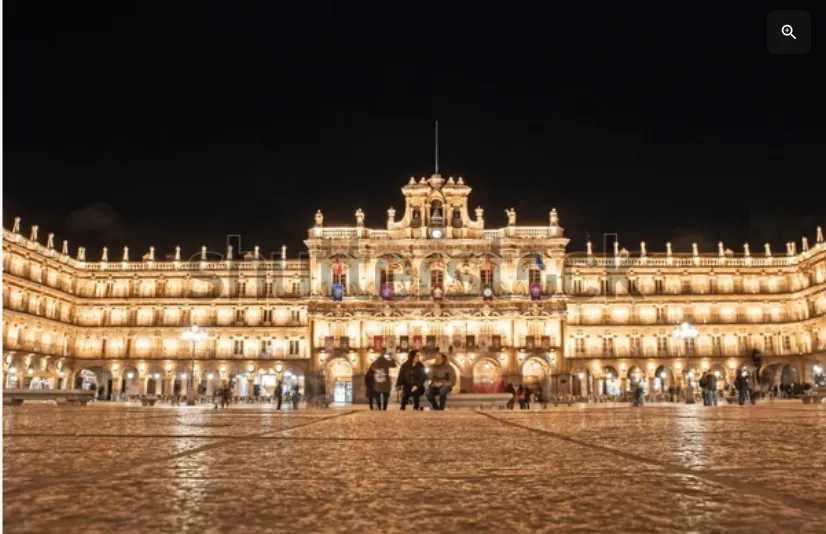

Enlaces de imagenes y contenido de Gastronomia de Salamanca

Las imágenes están obtenidas de google y contenido alguno de IA de Google
Incluyo los enlaces de donde se han obtenido las imágenes de todas las páginas
- La bandera de la provincia de Salamanca
- Imagen de hornazo obtenida de google
- Imagen de Salamanca obtenida desde está url, y está en la página de bares y restaurantes
- Imagen de la portada de la página Inicio
- Imagen de rosquillas de ledesma
- Imagen de rosquillas de Vinos de los Arribes
- Imagen de bollo maimón
- Video elaboración del farinato de youtube
- Video elaboración del hornazo de youtube
- Video elaboración de patatas meneas
- Icono de bares de tapas
- Icono de Restaurantes
- Icono de Cafes
- Icono de Copas
- Imagen de plaza mayor